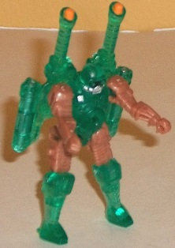
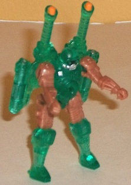
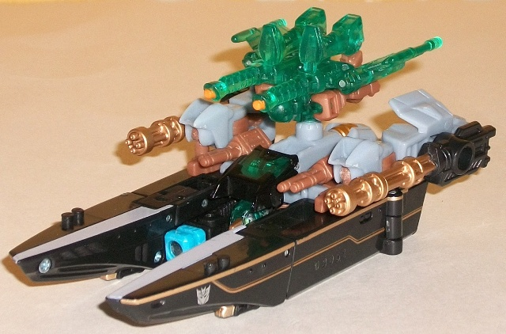
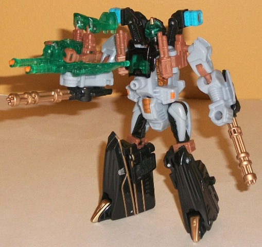
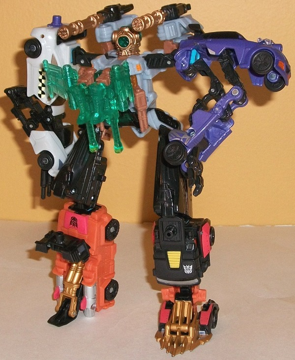

Waterlog
Waterlog

Allegiance : Minicon
Size : Mini-Con
Difficulty of Transformations : Very Easy
Color Scheme : Transparent pale aqua green, pale bronzish brown, and some silver, light orange, and black
Individual Rating : 5.5
Undertow
w/ Waterlog
Waterlog

Allegiance
: Minicon
Size
: Mini-Con
Difficulty of Transformations
: Very
Easy
Color Scheme
: Transparent pale aqua
green, pale bronzish brown, and some silver, light orange, and black
Individual Rating
: 5.5
Waterlog's robot mode
is quite unique, and borrows very strongly from Undertow's aquatic theme.
Waterlog has a head design that looks exceptionally like a diver's mask--
and is well-painted to bring out those details as well, such as the "goggles"
and breathing mask. The rest of him has some pretty good mold detailing
to boot, with little hands sculpted on his lower arms, as well as rather
rounded-looking tech detailing on his legs, wings, and back. As far as
his color scheme goes, the aqua green fits in fairly well with Undertow's
colors, and the bronzish brown on his appendages serves as a nice contrast
color to the green. I do wish he had a few more paint apps to up the variety
a little, though. His general proportions are pretty good, though he has
quite a lot of "back kibble" hanging off of him-- I don't mind the two
guns sticking up above his shoulders, but the wings make him back-heavy
enough that, combined with his small feet, make him pretty much impossible
to stand up straight. At least his articulation is fairly decent for a
Minicon-- he can move at the shoulders, hips, knees, and at a mid-point
on each of his wings. He has a Minicon port in the middle of his stomach,
and a Powerlinx port in the middle of his back.
His vehicle weapon mode
looks rather cool. The robot legs on the top of it are rather obvious,
but the wings frame the two guns quite nicely, and help to hide some of
the extras that would otherwise be more distracting, like his robot arms
and upper legs. His robot weapon mode is pretty weak, though, as it's just
his robot mode face-up with the legs curled inwards a bit and the wings
extended outwards. Again, the wings look nice, but otherwise it is waaayyy
too obvious it's just Waterlog on his back. There's not even a real attempt
to hide it, honestly.
In his chest armor mode,
Waterlog looks pretty solid, with his wings again framing his form quite
well and making it look more like a piece of chest armor than a little
guy doing yoga. Although the robot legs (again) hang off the front and
are rather obvious, his bronzish robot parts are hidden-- not surprising,
since this mode is basically his vehicle weapon mode with the wings angled
a little differently.
Waterlog is one of the
more unique Power Core Minicons, with such an obvious aquatic theme to
him. The kibble in his robot mode is a bit much, and his robot weapon mode
is incredibly weak, but his vehicle weapon and chest armor modes are both
fairly good, overall. A slightly above-average PCC Minicon, edging out
ahead of the pack because of his uniqueness.
 Undertow
Undertow



Allegiance
: Decepticon
Difficulty of Vehicle/Robot Transformation
:
Medium
Difficulty of Torso Transformation
:
Easy
Color Scheme
: Black, dull pale bluish
gray, and some light sky blue, pale bronzish brown, transparent pale aqua
green, silver, and metallic bronze
Individual Rating
: 8.3
Undertow's vehicle mode
is a little bit on the indiscernable side. It's clearly a boat of some
sort, but beyond that there seems to be an awful lot of design liberties
taken this mode. The arms fairly obviously stick out on top of the sides,
though at least there's some big rotary guns to help alleviate that eyesore
slightly. The cockpit is also vastly undersized compared to the pontoons,
and there really isn't much of a back end to the mode-- it's obviously
just Undertow's waist and upper legs bend backwards. At least Undertow
has a Powerlinx port right smack dab in the middle of all this, though,
so if you add Waterlog or some other PCC Minicon on there it can help to
cover all that robot kibble up a bit. On a lesser note, two of the combiner
ports stick out between the pontoons as does the normal robot head (slightly).
That said, there are certainly some good things to say about this mode.
There's plenty of guns, something you wouldn't expect on most sea-faring
Transformers, and the mold detailing on them is especially well-done, with
little missile racks and piston-like details everywhere. The pontoons themselves
also look quite good, and the way the bronze detailing contrasts with the
black looks awesome. The light sky blue combiner ports-- which usually
stick out oddly-- look good color-wise with the rest of this toy, and the
aqua green makes for a nice color on the transparent parts to boot. The
pale bluish gray is a bit of a blah color, though it does serve as a light-colored
foil against the black.
Undertow's robot mode
looks considerably better than his vehicle mode, and really I don't have
many negative things to say about it. The combiner ports sticking out from
on top of his shoulders look a bit odd, but that's about it. Undertow's
proportions are quite well-done all over, and I love that the rotary guns
are now slung under his arms. The pontoons also fold together to form his
lower legs quite well. His chest is framed nicely, with some really cool
mold and paint detailing, a transparent cockpit, and some guns. His head
also looks pretty cool, looking like someone scowling underneath some sort
of futuristic breathing apparatus, complete with a see-through visor. In
this mode, Undertow also has you covered in terms of articulation-- he
can move at the neck, shoulders, elbows (at two points), hips (at two points),
knees (at two points), and slightly at the ankles. Given that he's not
backheavy in the least in this mode, this means that he's one of the more
posable Power Core combiners, with absolutely nothing getting in the way
of some neat poses.
Undertow's transformation
to torso mode is just a tad more complex than it first seems, even if the
same basic "layout" of his normal robot mode is still intact, with the
legs becoming the torso mode's upper legs and the chest still being the
chest. However, to get the combined mode head to flip out, you actually
flip the ENTIRE chest and head assembly over, thus making the torso mode's
chest an upside-version of the normal robot mode's, which works quite well
and adds a bit more variety to Undertow's look. The arms fold in on themselves
behind the shoulders to form cannons, though it's still fairly obvious
they're a pair of arms, and they're the only pieces of "kibble" in this
mode. At least the fist holes have somewhere to peg in, though, and don't
just just hang there. The upper leg construction isn't exactly top-notch
either, but that's more because of the waist than the legs themselves--
because the waist is now "backwards", the bolts in it and the upper legs
are seen quite clearly here. Plus, having the hips go out to the side of
the waist so much looks a little off. My favorite bit of this mode has
to be the sculpted head for the combined mode-- it's based very heavily
off of an old-school divers' helmet, and looks rather inhuman and emotionless,
which can work well for a Decepticon. Sadly, even though it looks like
it should, the light piping for the head doesn't work too well. As for
articulation, in this mode Undertow can move at the neck, shoulders (at
three points), hips (at four points), and knees (at two points). Most of
the hip articulation is simply a side-effect of his transformation and
not something you'd want to fiddle with, though, leaving the "usable" articulation
for Undertow about average for a Power Core Combiner here.
Undertow's vehicle mode
is a bit weak, but his fantastic robot mode and pretty nice torso mode
make up for it. He's also got some really nice details, such as both of
his heads (particularly the torso mode head), is packed with some weapons,
and also has pretty nice articulation. An above-average Power Core Combiner
to be sure, though it's a shame that because of his alt mode, he can't
use any drones that "fit" with it, as there are no Power Core drones that
are aquatic vehicles.
Reviews by Beastbot